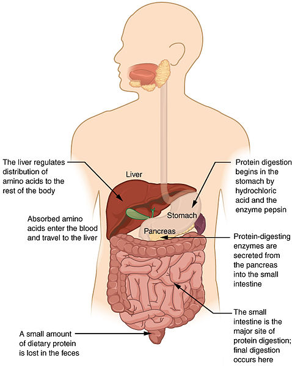

The digestive system is the combination of several bodily parts that is responsible for the breakdown of foods and liquids so that they can be absorbed and utilised by the body. |
 |
The first step in digesting food is its breakdown by the mouth. Food is chewed so that it can be more easily moved into the main part of the digestive system.
When the chewed food is received into the stomach, it is mixed with gastric juices that can break down the food into smaller, more soluble parts. The stomach grinds the food together with these juices so that they can be absorbed more easily into the body during the next stages.
p>The small intestine is the starting point for the absorption of useful nutrients in the body's blood stream. The first part of the small intestine is the duodenum which continues further breakdown of the food. This is then passed further down the small intestine.